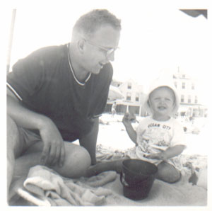
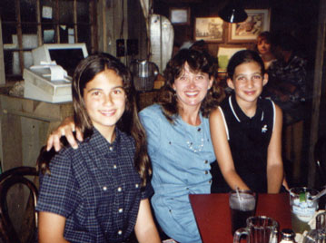

| The mid-1950's was a time of mirth: in Baltimore, Dell Wogsland was born to Neal & Mary Dell Wogsland. She grew up in the small town of Bel Air, MD. Dell was truly a "unique" child; always a cut-up. She attended Western Maryland College and graduated in 1976 with a BS in Psychology. For a time she worked as an Investigator for the U.S. Office of Personnel Management. |

|
|

|
Dell then met Bob Elias and they were married on December 10th, 1983 in Bel Air, MD. Dell and Bob made their home in California and were soon blest with two daughters, Julie and Kristen. When the girls were still young they moved to the Nevada side of Lake Tahoe, where they still make their home today. |